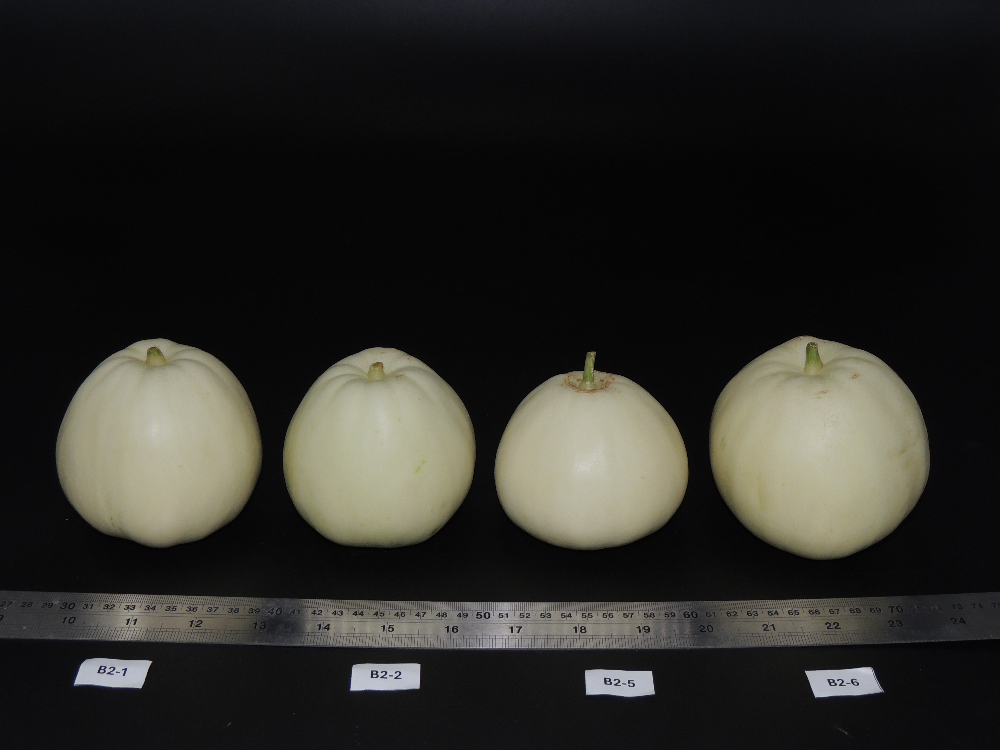

關於我 / About Me
我致力於將分子生物學、人工智慧與環境永續三大領域交織。擁有從實驗室製程開發到田間智慧化管理的完整實務經驗。我擅長撰寫結構複雜的國科會計畫，並在跨領域團隊中擔任技術與商業語言的「轉譯者」，推動科技農業的實質落地。
專業核心能力 / Expertise
生技研發與製程
DNA/RNA 萃取、蛋白純化、發酵技術、作物精準栽培與植醫診斷。
智慧農業 AI
AI 智慧環控、IoT 物聯網應用、Power BI 大數據可視化、太陽能設施整合。
永續與管理
農業碳盤點規劃、國科會計畫撰寫、跨領域團隊溝通 (AI/經濟/生工)。
成就與實錄 / Achievements
2025 農業開放資料黑客松 全國第二名
2025 生物開放數據松 全國第三名
2023 創創火箭營工作坊嘉義 第一名
2025 ACSA 亞洲作物協會大會 報告講者

2025 農業黑客松獲獎

ACSA 國際大會專題報告

分子生物實驗與數據採集
重點專案 / Key Projects
國科會整合型計畫 (2024-2025)
農業設施產業碳盤點及共創低碳栽培體系
主導撰寫並執行專案，透過數據驅動設施農業進行碳足跡追蹤與減碳製程優化。
智慧環控系統開發 (2025 ISHS)
運用 AI 演算法於溫室環境自動補償控制，研究成果投稿於國際學術會。跨域協作單位包含台大生工與中興農藝。